Antes de começarmos, aí vai uma curiosidade:
O coração do sapo quando retirado do corpo do animal continua a contrair-se ritmicamente durante algum tempo.
A esta propriedade deu-se o nome de automatismo cardíaco (teoria miogênica da contração cardíaca).
Da mesma forma, corações isolados de animais de sangue quente apresentam este automatismo, desde que colocados em uma solução líquida especial substitutiva do sangue.
O Sistema Nervoso Autônomo, de forma automática e independendo de nossa vontade consciente, exerce influência no funcionamento de diversos tecidos do nosso corpo através dos mediadores químicos liberados pelas terminações de seus 2 tipos de fibras: Simpáticas e Parassimpáticas (teoria neurogênica)
O controle da atividade cardíaca é realizado minuto a minuto, por meio n. vago (com efeito parassimpático sobre o tecido nodal e cardiomiócitos).
O neurotransmissor parassimpático é a acetilcolina.
Seu receptor no coração é o muscarínico 2 (receptor metabotrópico acoplado a proteína G, que promove diminuição da frequência cardíaca devido a abertura prolongada dos canais de potássio na repolarização, aumentando o tempo de repolarização e; diminuição da força de contração por aumento da recaptação de cálcio pelo retículo sarcoplasmático).
As fibras simpáticas, na sua quase totalidade, liberam noradrenalina.
Ao mesmo tempo, fazendo também parte do Sistema Nervoso Autônomo Simpático, a medula das glândulas Supra Renais que liberam uma considerável quantidade de adrenalina na circulação.
A noradrenalina atua em receptores adrenérgico beta-1 (receptor metabotrópico acoplado a proteína G que promove aumento da frequência cardíaca, devido a abertura rápida dos canais de cálcio na despolarização e; aumento da força de contração por aumentar a liberação de cálcio do retículo sarcoplasmático),
A estimulação simpática e parassimpática atuam sobre o sistema excito-condutor cardíaco e nos cardiomiócitos.
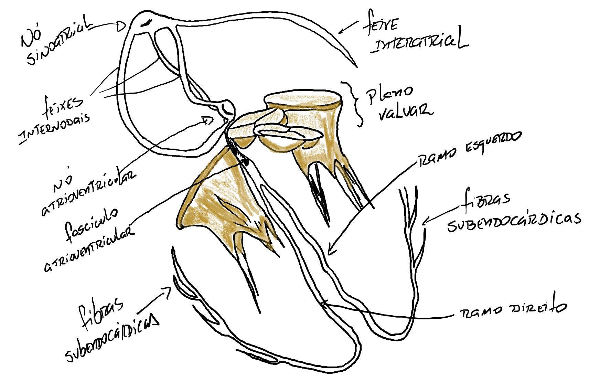
Onda P:
Corresponde à despolarização atrial, sendo a sua primeira componente relativa à aurícula direita e a segunda relativa à aurícula esquerda, a sobreposição das suas componentes gera a morfologia tipicamente arredondada (excepção de V1)[não se encontra explicação sobre o que vem a ser V1], e sua amplitude máxima é de 0,25 mV.
Tamanho normal: Altura: 2,5 mm, comprimento: 3,0 mm, sendo avaliada em DII.
A Hipertrofia atrial causa um aumento na altura e/ou duração da Onda P.
Complexo QRS:
Corresponde a despolarização ventricular.
É maior que a onda P pois a massa muscular dos ventrículos é maior que a dos átrios, os sinais gerados pela despolarização ventricular são mais fortes do que os sinais gerados pela repolarização atrial.
Anormalidades no sistema de condução geram complexos QRS alargados.
Onda T:
Corresponde a repolarização ventricular.
Normalmente é perpendicular e arredondada.
A inversão da onda T indica processo isquêmico.
Onda T de configuração anormal indica hipercalemia.
Arritmia não sinusal = ausência da onda P
Onda U:
A onda U, nem sempre registrada no ECG, corresponde a repolarização dos Músculos Papilares.
Onda T atrial:
A onda T atrial, geralmente não aparece no ECG, pois é “camuflada” pela Repolarização Ventricular.
Ela corresponde a Repolarização Atrial, e quando aparece possui polaridade inversa a onda T – Repolarização Ventricular.
Intervalo PR:
É o intervalo entre o início da onda P e início do complexo QRS.
É um indicativo da velocidade de condução entre os átrios e os ventrículos e corresponde ao tempo de condução do impulso elétrico desde o nó atrio-ventricular até aos ventrículos.
O espaço entre a onda P e o complexo QRS é provocado pelo retardo do impulso elétrico no tecido fibroso que está localizado entre átrios e ventrículos, a passagem por esse tecido impede que o impulso seja captado devidamente, pois o tecido fibroso não é um bom condutor de eletricidade.
Período PP:
O Intervalo PP, ou Ciclo PP.
É o intervalo entre o início de duas ondas P.
Corresponde a frequência de despolarização atrial, ou simplesmente frequência atrial.
Período RR:
O Intervalo RR ou Ciclo RR.
É o intervalo entre duas ondas R.
Corresponde a frequência de despolarização ventricular, ou simplesmente frequência ventricular.
Para compreender a formação das ondas no eletrocardiograma precisamos estudar a figura abaixo:
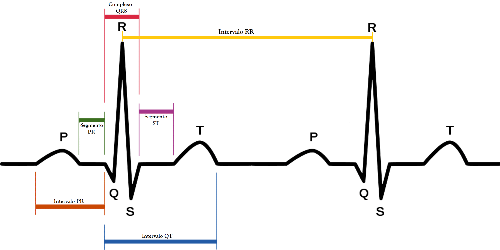
Teoria do dipolo
O dipolo é formado por duas cargas elétricas, opostas, separadas por uma distância ou, no nosso caso a membrana plasmática.
Observe na figura 1:
A face interna da membrana plasmática de uma célula em repouso (polarizada) eletronegativo e, a face externa da membrana eletropositiva.
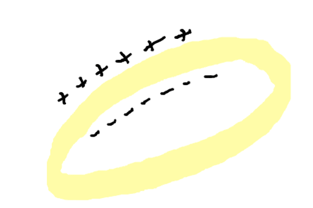
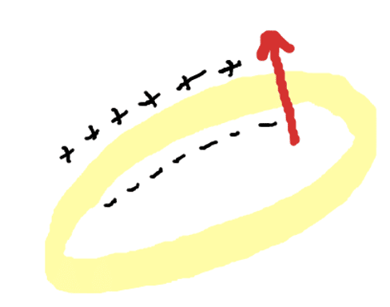
O dipolo cria um sentido elétrico (vetor elétrico), que sempre aponta do lado negativo para o lado positivo.
Observe na figura 2:
O vetor elétrico traçado no sentido de dentro para fora de uma célula polarizada (lembrando que o vetor sempre caminha do negativo para o positivo).
Desta forma, a ponta da seta indica para o local da eletropositividade.
Despolarização
Quando ocorre a despolarização, o estímulo é conduzido pelo complexo estimulante do coração e também por meio das junções comunicantes (GAPs) que estão localizadas entre as células cardíacas (formando um sincício – conexão citoplasma com citoplasma das células vizinhas).
A inversão da carga elétrica promove o deslocamento do vetor elétrico, do ponto negativo para o ponto positivo.
A figura 3 demonstra a despolarização iniciou do lado esquerdo da célula e caminha para a direita, desta forma, o vetor elétrico acompanha a entrada das cargas positivas (da esquerda para a direita).
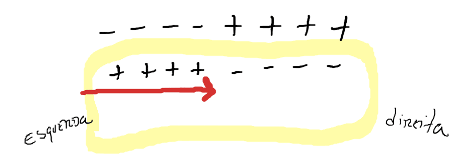
Podemos assumir, nesse momento, que o vetor elétrico tem uma cabeça (ponta da seta) positiva, se deslocando da esquerda para a direita.
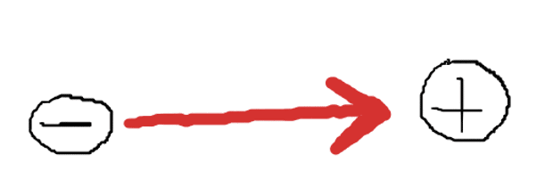
As células cardíacas (cardiomiócitos) podem criar diversos vetores elétricos, apontando para diversas posições. Como os vetores elétricos podem:
– Serem somados, caso tenham a mesma direção;
– Serem subtraídos, caso tenham direções opostas;
– Ou encontrar o vetor resultante pela regra do paralelogramo.
Em A temos a soma dos vetores (com a mesma direção);
Em B a subtração de vetores, com o resultado do vetor final (apontado para o lado do maior vetor no processo de subtração);
Em C o vetor resultante, aplicando a regra do paralelogramo.
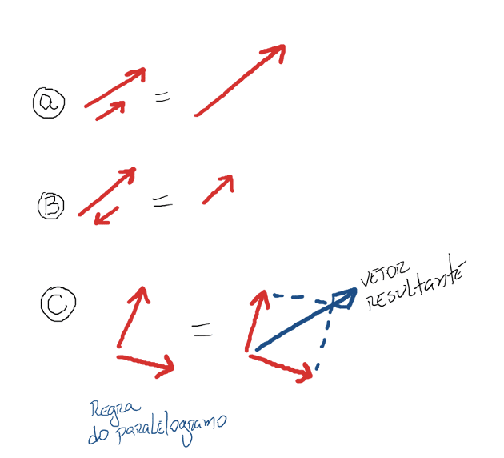
Para transpor de uma forma didática, vou assumir algumas inconsistências teóricas e científicas, com o intuito de facilitar o processo de construção desse conhecimento aplicado…
Vamos pensar na massa muscular total do coração, composta por diversos cardiomócitos.
Assumindo que a despolarização ocorrerá do nó sinoatrial em direção ao ápice do coração teremos um vetor elétrico resultante, com direção de cima para baixo, da direita para a esquerda, sendo a cabeça desse vetor positiva (veja figura 6):
Em A considere todos os cardiomiócitos em repouso (eletronegativos internamente). O estímulo parte do nó sinoatrial (círculo laranja) e se propaga em direção ao ápice do coração. As fileiras dos cardiomiócitos terão sua polaridade invertida nesse momento de despolarização, e o vetor elétrico parte do nó sinoatrial em direção ao ápice, como podemos observar nas figuras B e C. Assim o sentido do vetor é de cima para baixo, da direita para a esquerda, sendo a ponta do vetor despolarizante positiva.
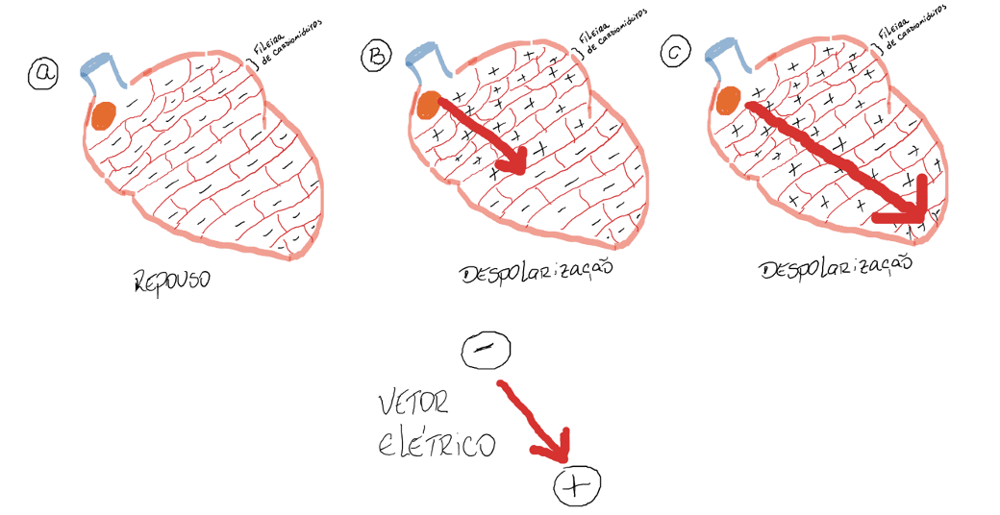
Uma informação importante a ser inserida.
Os cardiomiócitos ventriculares despolarizam inicialmente, as células mais próximas ao endocárdio, se propagando para as células mais próximas ao epicárdio (a despolarização ocorre do endocárdio para o epicárdio).
O processo de repolarização ocorre de forma inversa, das células mais próximas ao epicárdio em direção as células mais próximas ao endocárdio (repolarização do epicárdio para o endocárdio).
Veja figura 7:
Em A podemos observar o sentido da despolarização e em B o da repolarização.
Vale a pena reforçar que esse é o sentido que ocorrem os processos de despolarização e repolarização, ainda não estamos avaliando o vetor elétrico.
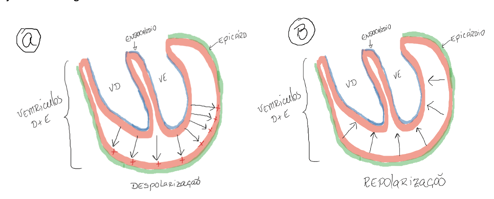
O vetor elétrico e o sentido da despolarização apresentam a mesma direção, como mostra a figura 8:
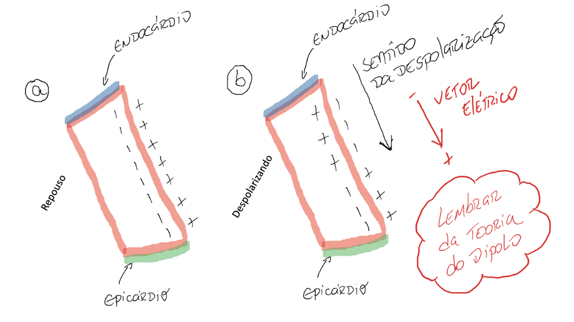
Contudo, o vetor elétrico na repolarização tem direção contrária.
Como a repolarização ocorre nas camadas mais próximas ao epicárdio e retorna em direção as camadas mais próximas ao endocárdio, o sentido da repolarização é de fora para dentro, de baixo para cima.
Mas… se lembrarmos da teoria do dipolo, o vetor elétrico sempre apontará para a região positiva ou menos eletronegativa.
As camadas mais externas repolarizam primeiro, ficando eletronegativas em seu interior.
E a sequência da repolarização segue em direção ao endocárdio.
Assim, as camadas mais próximas do endocárdio estão recebendo as cargas elétricas depois.
O vetor elétrico então apontará para o epicárdio, como ilustrado na figura 9:
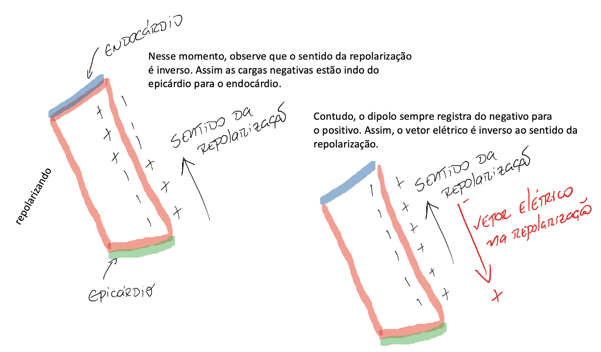
Podemos resumir o que ocorre nos ventrículos, como sentido da despolarização e repolarização, assim como seus vetores elétricos na figura 10:
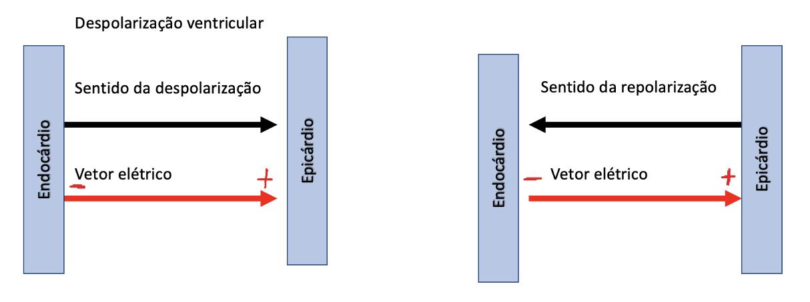